2023 Higher Biology - Paper 1 questions
Source: Scottish Qualifications Authority (SQA) / Qualifications Scotland. This is a StemInteract HTML companion, not an official HTML edition. Selectable text is supplied alongside original page images. Use the images or original PDF for equations, powers, fractions, vector notation, tables and diagrams; text extraction cannot fully preserve mathematical layout.
Jump to a question
PDF page 1
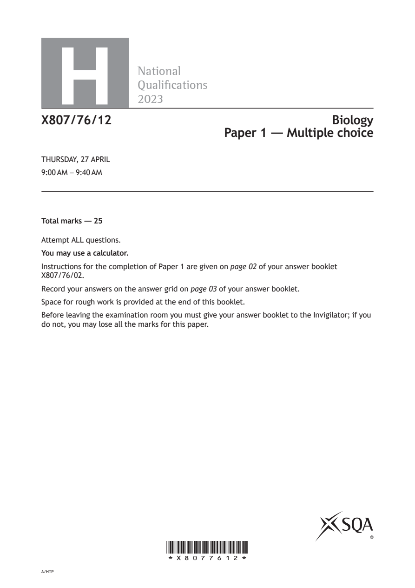
Selectable page text
H
National
Qualications
2023
X807/76/12 Biology
Paper 1 — Multiple choice
THURSDAY, 27 APRIL
9:00 AM – 9:40 AM
Total marks — 25
Attempt ALL questions.
You may use a calculator.
Instructions for the completion of Paper 1 are given on page 02 of your answer booklet
X807/76/02.
Record your answers on the answer grid on page 03 of your answer booklet.
Space for rough work is provided at the end of this booklet.
Before leaving the examination room you must give your answer booklet to the Invigilator; if you
do not, you may lose all the marks for this paper.
©
*X8077612*
A/HTPPDF page 2
Paper 1, Question 1Paper 1, Question 2Paper 1, Question 3Paper 1, Question 4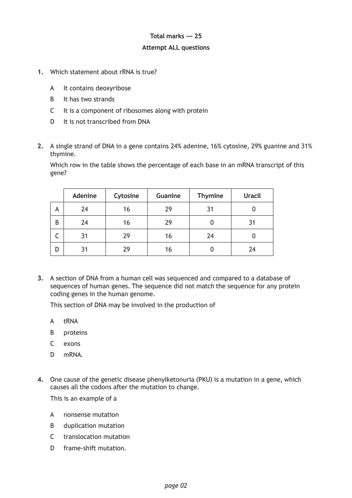
Selectable page text
Total marks — 25
Attempt ALL questions
1. Which statement about rRNA is true?
A It contains deoxyribose
B It has two strands
C It is a component of ribosomes along with protein
D It is not transcribed from DNA
2. A single strand of DNA in a gene contains 24% adenine, 16% cytosine, 29% guanine and 31%
thymine.
Which row in the table shows the percentage of each base in an mRNA transcript of this
gene?
Adenine Cytosine Guanine Thymine Uracil
A 24 16 29 31 0
B 24 16 29 0 31
C 31 29 16 24 0
D 31 29 16 0 24
3. A section of DNA from a human cell was sequenced and compared to a database of
sequences of human genes. The sequence did not match the sequence for any protein
coding genes in the human genome.
This section of DNA may be involved in the production of
A tRNA
B proteins
C exons
D mRNA.
4. One cause of the genetic disease phenylketonuria (PKU) is a mutation in a gene, which
causes all the codons after the mutation to change.
This is an example of a
A nonsense mutation
B duplication mutation
C translocation mutation
D frame-shift mutation.
page 02PDF page 3
Paper 1, Question 5Paper 1, Question 6Paper 1, Question 7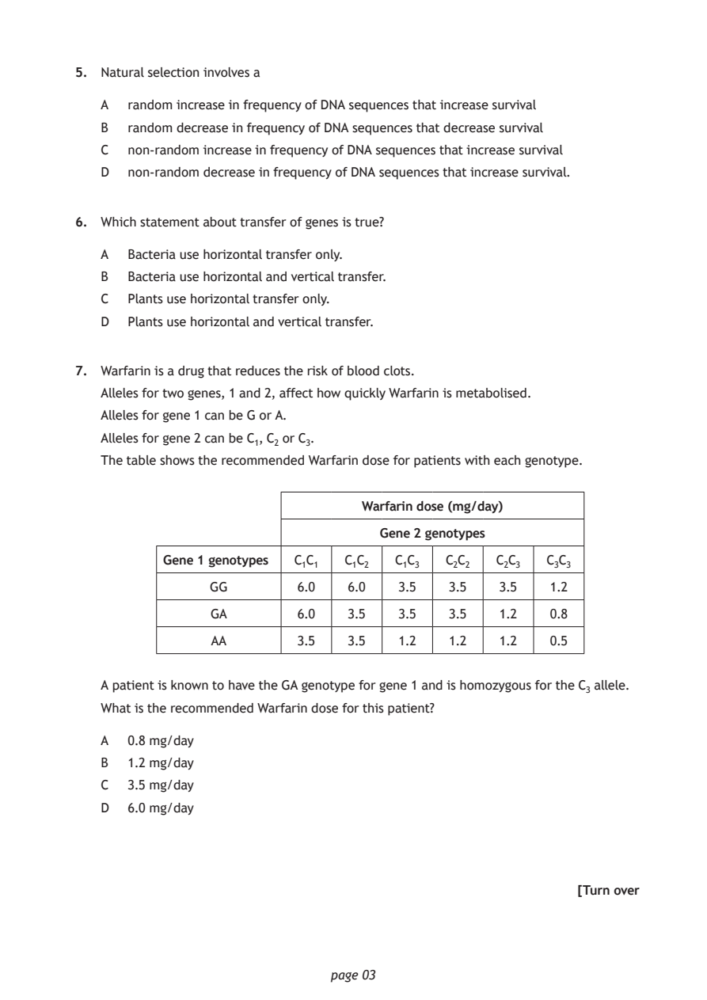
Selectable page text
5. Natural selection involves a
A random increase in frequency of DNA sequences that increase survival
B random decrease in frequency of DNA sequences that decrease survival
C non-random increase in frequency of DNA sequences that increase survival
D non-random decrease in frequency of DNA sequences that increase survival.
6. Which statement about transfer of genes is true?
A Bacteria use horizontal transfer only.
B Bacteria use horizontal and vertical transfer.
C Plants use horizontal transfer only.
D Plants use horizontal and vertical transfer.
7. Warfarin is a drug that reduces the risk of blood clots.
Alleles for two genes, 1 and 2, affect how quickly Warfarin is metabolised.
Alleles for gene 1 can be G or A.
Alleles for gene 2 can be C₁, C₂ or C₃.
The table shows the recommended Warfarin dose for patients with each genotype.
Warfarin dose (mg/day)
Gene 2 genotypes
Gene 1 genotypes C₁C₁ C₁C₂ C₁C₃ C₂C₂ C₂C₃ C₃C₃
GG 6.0 6.0 3.5 3.5 3.5 1.2
GA 6.0 3.5 3.5 3.5 1.2 0.8
AA 3.5 3.5 1.2 1.2 1.2 0.5
A patient is known to have the GA genotype for gene 1 and is homozygous for the C₃ allele.
What is the recommended Warfarin dose for this patient?
A 0.8 mg/day
B 1.2 mg/day
C 3.5 mg/day
D 6.0 mg/day
[Turn over
page 03PDF page 4
Paper 1, Question 8Paper 1, Question 9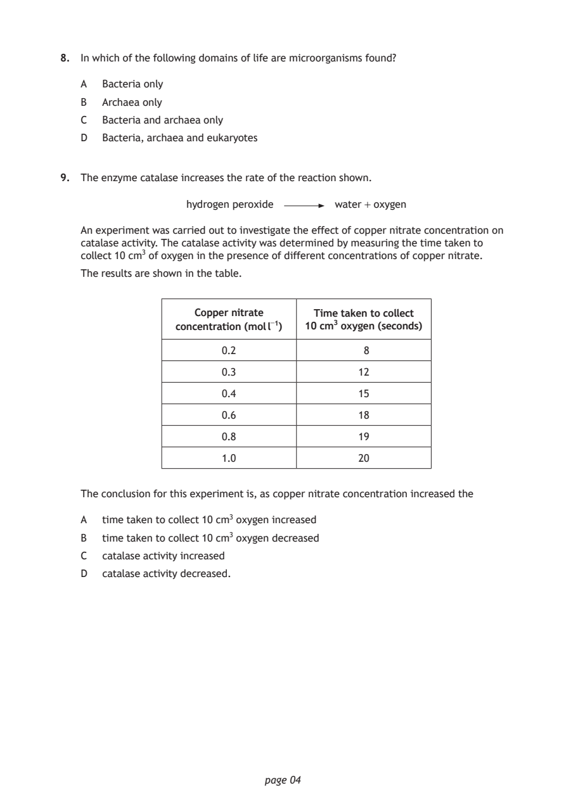
Selectable page text
8. In which of the following domains of life are microorganisms found?
A Bacteria only
B Archaea only
C Bacteria and archaea only
D Bacteria, archaea and eukaryotes
9. The enzyme catalase increases the rate of the reaction shown.
hydrogen peroxide water + oxygen
An experiment was carried out to investigate the effect of copper nitrate concentration on
catalase activity. The catalase activity was determined by measuring the time taken to
collect 10 cm³ of oxygen in the presence of different concentrations of copper nitrate.
The results are shown in the table.
Copper nitrate Time taken to collect
concentration (mol l⁻¹) 10 cm³ oxygen (seconds)
0.2 8
0.3 12
0.4 15
0.6 18
0.8 19
1.0 20
The conclusion for this experiment is, as copper nitrate concentration increased the
A time taken to collect 10 cm³ oxygen increased
B time taken to collect 10 cm³ oxygen decreased
C catalase activity increased
D catalase activity decreased.
page 04PDF page 5
Paper 1, Question 10Paper 1, Question 11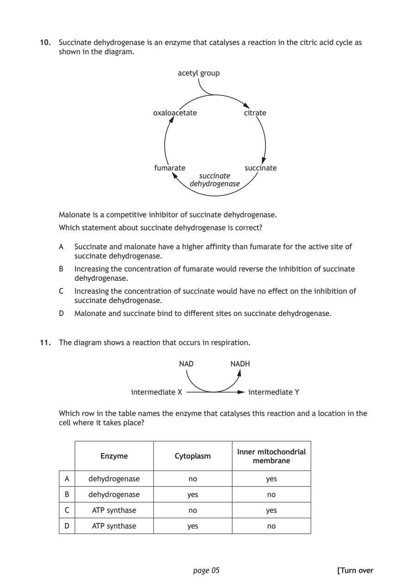
Selectable page text
10. Succinate dehydrogenase is an enzyme that catalyses a reaction in the citric acid cycle as
shown in the diagram.
acetyl group
oxaloacetate citrate
fumarate succinate
succinate
dehydrogenase
Malonate is a competitive inhibitor of succinate dehydrogenase.
Which statement about succinate dehydrogenase is correct?
A Succinate and malonate have a higher affinity than fumarate for the active site of
succinate dehydrogenase.
B Increasing the concentration of fumarate would reverse the inhibition of succinate
dehydrogenase.
C Increasing the concentration of succinate would have no effect on the inhibition of
succinate dehydrogenase.
D Malonate and succinate bind to different sites on succinate dehydrogenase.
11. The diagram shows a reaction that occurs in respiration.
NAD NADH
intermediate X intermediate Y
Which row in the table names the enzyme that catalyses this reaction and a location in the
cell where it takes place?
Inner mitochondrial
Enzyme Cytoplasm
membrane
A dehydrogenase no yes
B dehydrogenase yes no
C ATP synthase no yes
D ATP synthase yes no
page 05 [Turn overPDF page 6
Paper 1, Question 12Paper 1, Question 13Paper 1, Question 14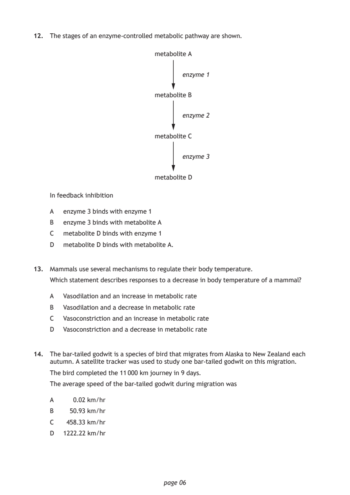
Selectable page text
12. The stages of an enzyme-controlled metabolic pathway are shown.
metabolite A
enzyme 1
metabolite B
enzyme 2
metabolite C
enzyme 3
metabolite D
In feedback inhibition
A enzyme 3 binds with enzyme 1
B enzyme 3 binds with metabolite A
C metabolite D binds with enzyme 1
D metabolite D binds with metabolite A.
13. Mammals use several mechanisms to regulate their body temperature.
Which statement describes responses to a decrease in body temperature of a mammal?
A Vasodilation and an increase in metabolic rate
B Vasodilation and a decrease in metabolic rate
C Vasoconstriction and an increase in metabolic rate
D Vasoconstriction and a decrease in metabolic rate
14. The bar-tailed godwit is a species of bird that migrates from Alaska to New Zealand each
autumn. A satellite tracker was used to study one bar-tailed godwit on this migration.
The bird completed the 11 000 km journey in 9 days.
The average speed of the bar-tailed godwit during migration was
A 0.02 km/hr
B 50.93 km/hr
C 458.33 km/hr
D 1222.22 km/hr
page 06PDF page 7
Paper 1, Question 15Paper 1, Question 16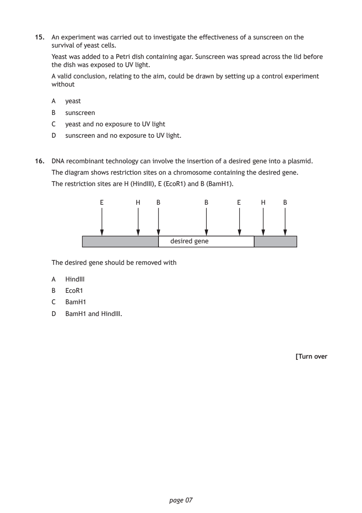
Selectable page text
15. An experiment was carried out to investigate the effectiveness of a sunscreen on the
survival of yeast cells.
Yeast was added to a Petri dish containing agar. Sunscreen was spread across the lid before
the dish was exposed to UV light.
A valid conclusion, relating to the aim, could be drawn by setting up a control experiment
without
A yeast
B sunscreen
C yeast and no exposure to UV light
D sunscreen and no exposure to UV light.
16. DNA recombinant technology can involve the insertion of a desired gene into a plasmid.
The diagram shows restriction sites on a chromosome containing the desired gene.
The restriction sites are H (HindIII), E (EcoR1) and B (BamH1).
E H B B E H B
desired gene
The desired gene should be removed with
A HindIII
B EcoR1
C BamH1
D BamH1 and HindIII.
[Turn over
page 07PDF page 8
Paper 1, Question 17Paper 1, Question 18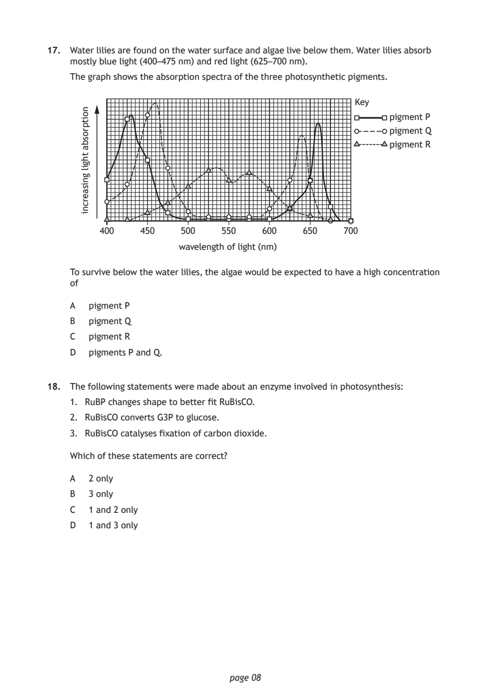
Selectable page text
17. Water lilies are found on the water surface and algae live below them. Water lilies absorb
mostly blue light (400–475 nm) and red light (625–700 nm).
The graph shows the absorption spectra of the three photosynthetic pigments.
wavelength of light (nm)
page 08
noitprosba
thgil
gnisaercni
Key
pigment P
pigment Q
pigment R
400 450 500 550 600 650 700
To survive below the water lilies, the algae would be expected to have a high concentration
of
A pigment P
B pigment Q
C pigment R
D pigments P and Q.
18. The following statements were made about an enzyme involved in photosynthesis:
1. RuBP changes shape to better fit RuBisCO.
2. RuBisCO converts G3P to glucose.
3. RuBisCO catalyses fixation of carbon dioxide.
Which of these statements are correct?
A 2 only
B 3 only
C 1 and 2 only
D 1 and 3 onlyPDF page 9
Paper 1, Question 19Paper 1, Question 20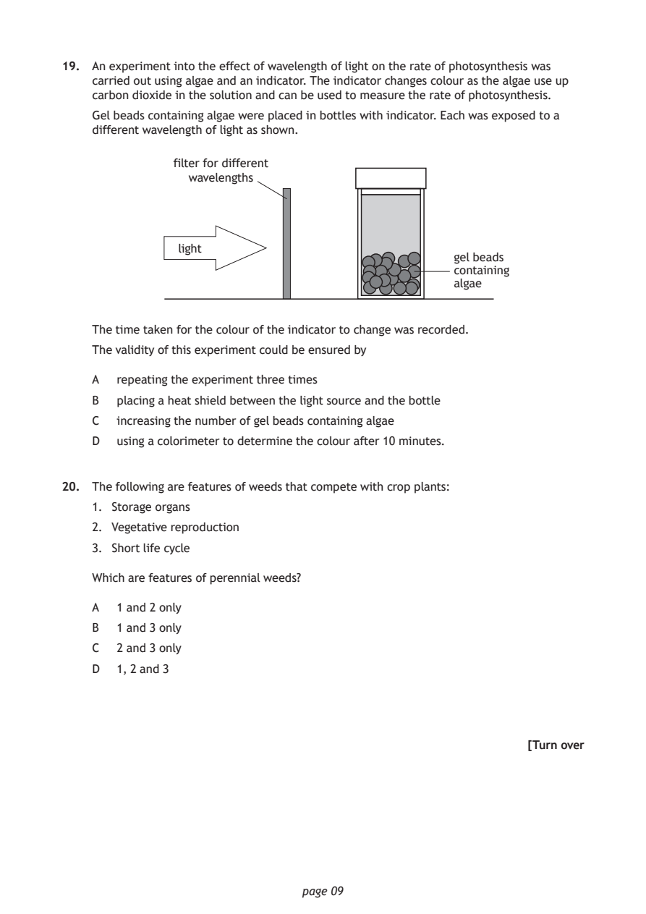
Selectable page text
19. An experiment into the effect of wavelength of light on the rate of photosynthesis was
carried out using algae and an indicator. The indicator changes colour as the algae use up
carbon dioxide in the solution and can be used to measure the rate of photosynthesis.
Gel beads containing algae were placed in bottles with indicator. Each was exposed to a
different wavelength of light as shown.
filter for different
wavelengths
light
gel beads
containing
algae
The time taken for the colour of the indicator to change was recorded.
The validity of this experiment could be ensured by
A repeating the experiment three times
B placing a heat shield between the light source and the bottle
C increasing the number of gel beads containing algae
D using a colorimeter to determine the colour after 10 minutes.
20. The following are features of weeds that compete with crop plants:
1. Storage organs
2. Vegetative reproduction
3. Short life cycle
Which are features of perennial weeds?
A 1 and 2 only
B 1 and 3 only
C 2 and 3 only
D 1, 2 and 3
[Turn over
page 09PDF page 10
Paper 1, Question 21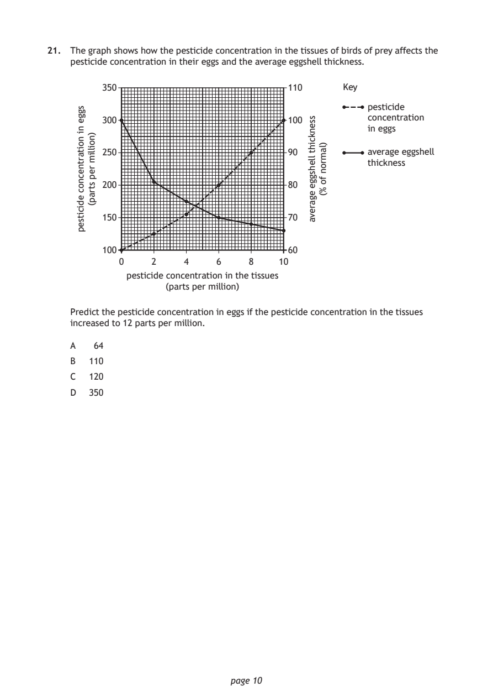
Selectable page text
21. The graph shows how the pesticide concentration in the tissues of birds of prey affects the
pesticide concentration in their eggs and the average eggshell thickness.
page 10
sgge
ni
noitartnecnoc
edicitsep
)noillim
rep
strap(
pesticide concentration in the tissues
(parts per million)
ssenkciht
llehsgge
egareva
)lamron
fo
%(
350 110 Key
pesticide
300 100 concentration
in eggs
250 90 average eggshell
thickness
200 80
150 70
100 60
0 2 4 6 8 10
Predict the pesticide concentration in eggs if the pesticide concentration in the tissues
increased to 12 parts per million.
A 64
B 110
C 120
D 350PDF page 11
Paper 1, Question 22Paper 1, Question 23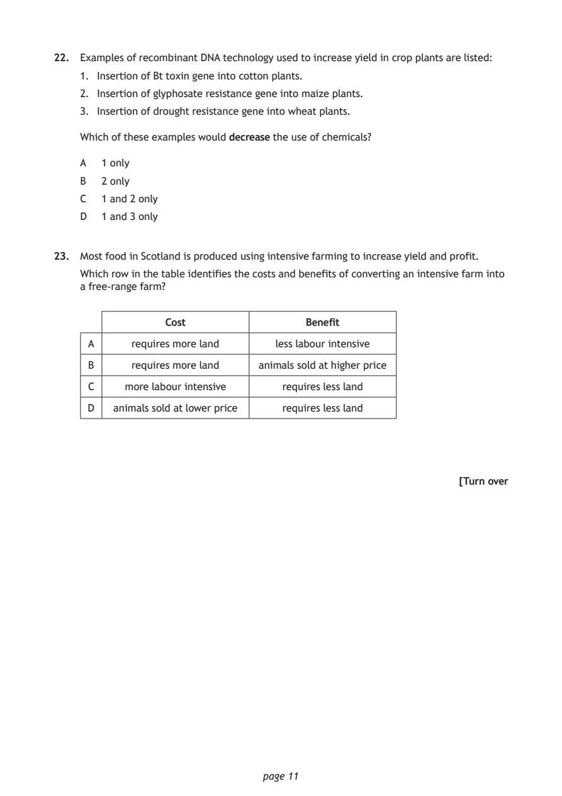
Selectable page text
22. Examples of recombinant DNA technology used to increase yield in crop plants are listed:
1. Insertion of Bt toxin gene into cotton plants.
2. Insertion of glyphosate resistance gene into maize plants.
3. Insertion of drought resistance gene into wheat plants.
Which of these examples would decrease the use of chemicals?
A 1 only
B 2 only
C 1 and 2 only
D 1 and 3 only
23. Most food in Scotland is produced using intensive farming to increase yield and profit.
Which row in the table identifies the costs and benefits of converting an intensive farm into
a free-range farm?
Cost Benefit
A requires more land less labour intensive
B requires more land animals sold at higher price
C more labour intensive requires less land
D animals sold at lower price requires less land
[Turn over
page 11PDF page 12
Paper 1, Question 24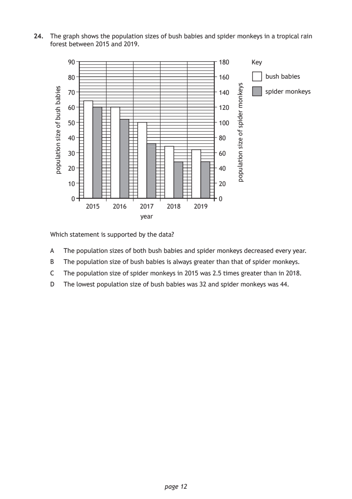
Selectable page text
24. The graph shows the population sizes of bush babies and spider monkeys in a tropical rain
forest between 2015 and 2019.
page 12
seibab
hsub
fo
ezis
noitalupop
syeknom
redips
fo
ezis
noitalupop
90 180 Key
80 160 bush babies
70 140 spider monkeys
60 120
50 100
40 80
30 60
20 40
10 20
0 0
2015 2016 2017 2018 2019
year
Which statement is supported by the data?
A The population sizes of both bush babies and spider monkeys decreased every year.
B The population size of bush babies is always greater than that of spider monkeys.
C The population size of spider monkeys in 2015 was 2.5 times greater than in 2018.
D The lowest population size of bush babies was 32 and spider monkeys was 44.PDF page 13
Paper 1, Question 25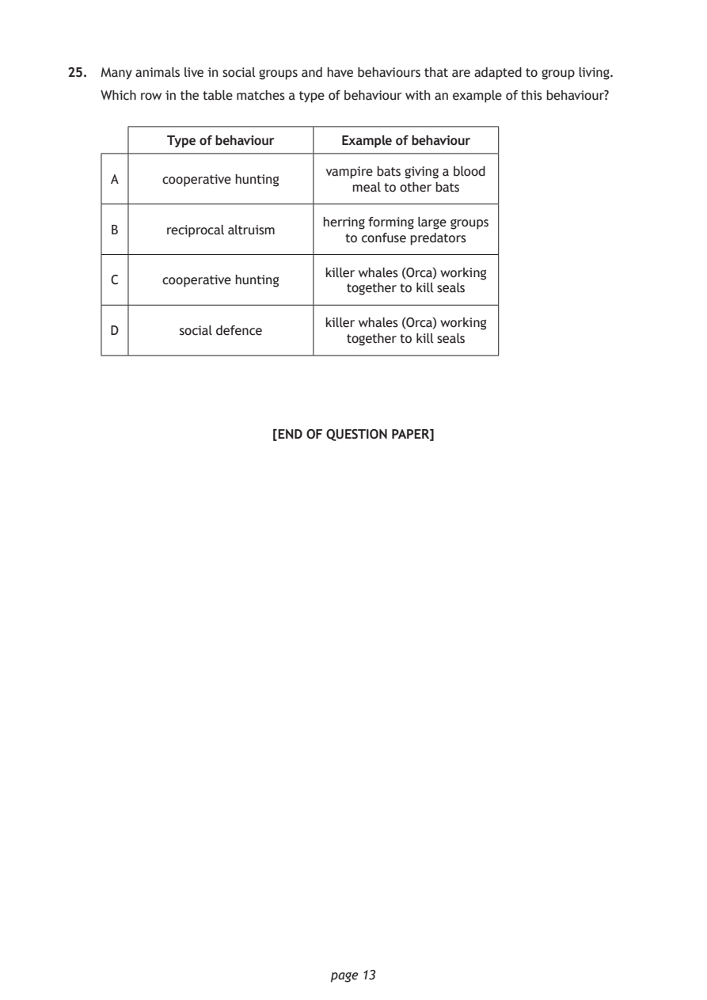
Selectable page text
25. Many animals live in social groups and have behaviours that are adapted to group living.
Which row in the table matches a type of behaviour with an example of this behaviour?
Type of behaviour Example of behaviour
vampire bats giving a blood
A cooperative hunting
meal to other bats
herring forming large groups
B reciprocal altruism
to confuse predators
killer whales (Orca) working
C cooperative hunting
together to kill seals
killer whales (Orca) working
D social defence
together to kill seals
[END OF QUESTION PAPER]
page 13PDF page 14
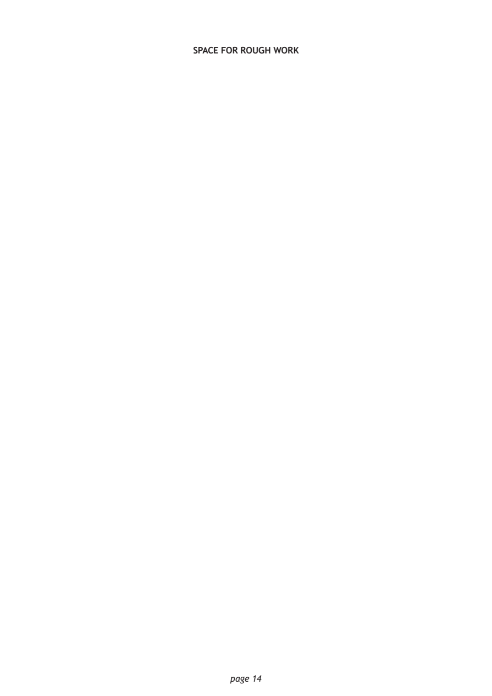
Selectable page text
SPACE FOR ROUGH WORK
page 14PDF page 15

Selectable page text
SPACE FOR ROUGH WORK
page 15PDF page 16

Selectable page text
[BLANK PAGE]
DO NOT WRITE ON THIS PAGE
page 16